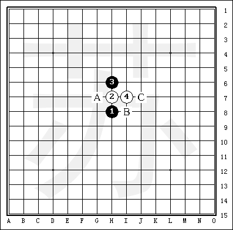
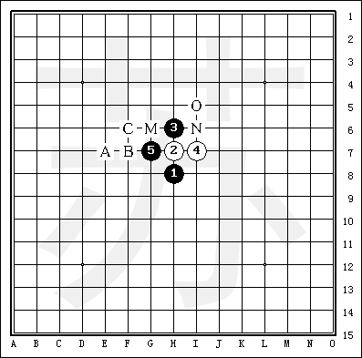
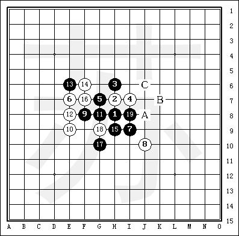
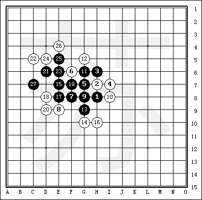

寒星白4强防变化
首页
定式及研究
#1 寒星白4强防变化 作者：大侠 发表时间：2006-10-17 11:45:05
如图所示：这个白4寒星布局是最强防！黑5常见有Ａ～Ｃ三点可以选择。Ａ点必胜，Ｂ，Ｃ两点目前还没有必胜的结论，未知局面也多，是今后研究的主要方向。

如下图所示：黑5－Ａ
黑5必胜点，白6防点大致有Ａ～Ｆ。其中Ｃ点防守最强，以下分述。

如下图所示：白6－Ａ
这个白6弱防，黑7扩展棋形。白8防后黑追胜。

黑
#2 Re:寒星白4强防变化 作者：百医天使 发表时间：2008-2-17 13:12:29
说的这个四不太强，一打的时候，两打才能算强吧
#3 Re:寒星白4强防变化 作者：越狱行辕 发表时间：2008-6-10 11:19:50
好啊
#4 Re:寒星白4强防变化 作者：≈★诚心★≈ 发表时间：2010-1-15 22:57:00
这个4怎么不强了 其他的已经地毯了 就这个4是最强的
#5 Re:寒星白4强防变化 作者：业余九级菜手 发表时间：2010-5-2 7:01:36
这个4是最强的，可二打也已经终结了！
=======上图对应的爱五子棋谱代码如下，以便你拆解：========
h8h9h10i9j9
======================================================这个是二打吧。
［此帖子已被 业余九级菜手 在 2010-5-2 7:03:46 编辑过］
#6 Re:寒星白4强防变化 作者：卫华 发表时间：2010-5-29 8:43:23
 白16防C6怎么杀？
#7 Re:寒星白4强防变化 作者：潍坊五子棋协会 发表时间：2010-5-29 10:16:20
这个16啥意思？
#8 Re:寒星白4强防变化 作者：逡下棋 发表时间：2010-5-31 23:40:39
和6楼同问！
#9 Re:寒星白4强防变化 作者：水月 发表时间：2010-6-1 0:32:55
08年的帖子不要乱顶好不好